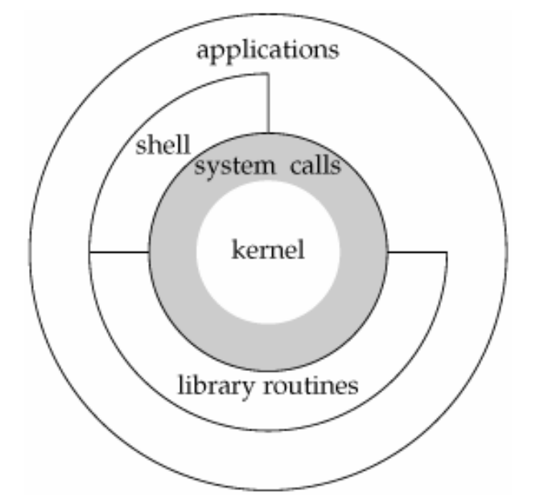
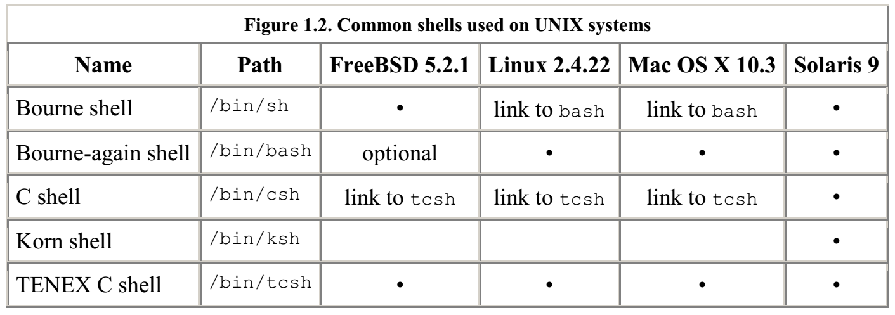
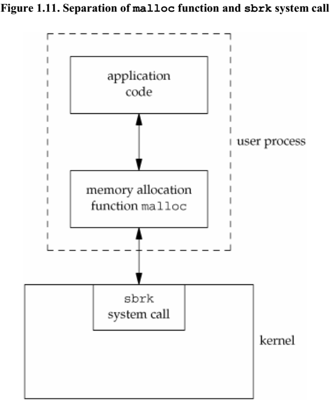

UNIX System Overview
UNIX Architecture
an operating system can be defined as the software that controls the hardware resources of the computer and provides an environment under which programs can run. We call it the kernel.

Interface to the kernel is a layer of software called the system calls.
Libraries of common functions are built on top of the system call interface.
The shell is a special application that provides an interface for running other applications.
Logging In
Login Name
sar: x: 205:105:Stephen Rago:/home/sar:/bin/ksh
loginName:encryptedPwd:userID:groupID:commentField:homeDirectory:shellProgram
The system knows which shell to execute based on the last field.
Shells
A shell is a command-line interpreter that reads user input and executes commands.

Files and Directories
File System
A directory is a file that contains directory entries.
Pathname
A pathname that begins with a slash is called an absolute pathname; otherwise, it's called a relative pathname. Relative pathnames refer to files relative to the current directory.
Input and Output
Unbuffered I/O
Unbuffered I/O is provided by the function open, read, write, lseek and close
Standard I/O
This prevents us from worrying about choosing optimal buffer sizes.
The most common function is printf.fgets reads an entire linegetc reads one character at a timeputc writes one character at a time
Programs and Process Control
Process Control
There are three primary functions for process control: fork, exec and waitpid
Threads and Thread IDs
Thread of control - one set of machine instructions executing at a time.
All the threads within a process share the same address space, file descriptors, stacks and process-related attributes.
Error Handling
When an error occurs in UNIX system functions, a negative value is returned and an integer errno is set to a value that gives additional information.
Note:
- The value of
errnois never cleared even if there is no error occurred. Therefore we should make sure it's only returned when a function indicates that an error occurred. - The value of
errnois never set to 0 by any of the functions.
Errors could be fatal (non-recoverable) and nonfatal (recoverable)
User Identification
Starting with 4.2 BSD, most of UNIX systems allow a user to belong to up to 16 additional user groups.
Time Values
UNIX system maintains three values for a process:
1. Clock time
2. User CPU time
3. System CPU time
The user CPU time is the CPU time attributed to user instructions. The system CPU time is the CPU time attributed to the kernel when it executes on behalf of the process.
System calls and library functions
We should realize, that we can replace the library functions, if desired, whereas the system calls usually cannot be replaced

System calls usually provide a minimal interface, whereas library functions often provide more elaborate functionality